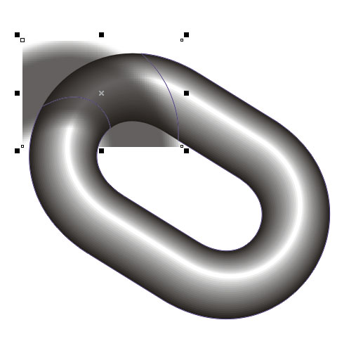
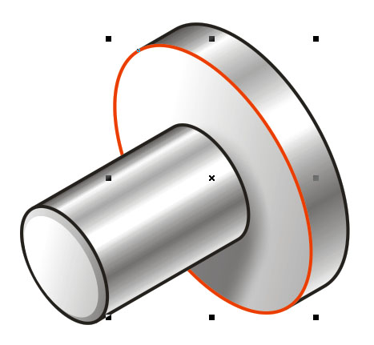
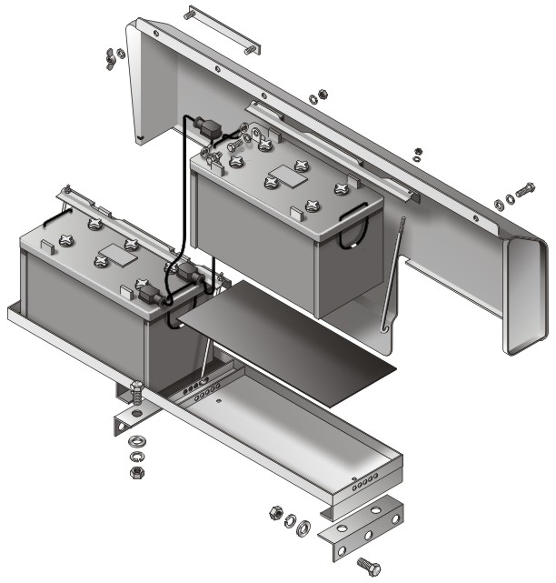
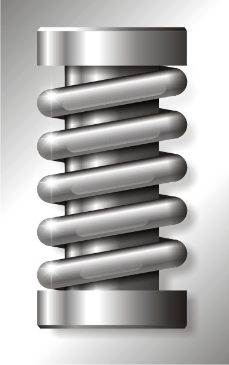
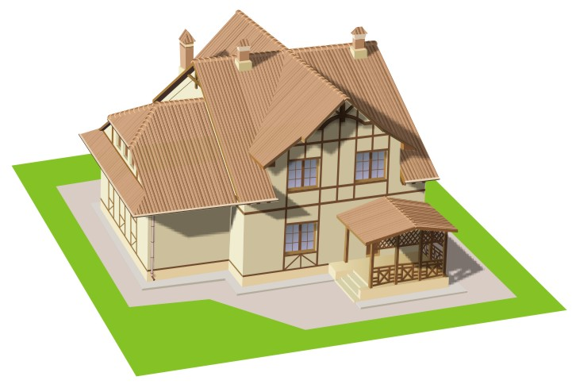

Цепь с помощью контейнера
К сожалению, согласно урока многоУважаемого Solowejka http://cdrpro.ru/forum/45-406-1 (кадрирование) и образца цепи, согласно урока "Олимпийские кольца" http://cdrpro.ru/forum/45-402-1 (контейнерование), я заметил, что при помещении вспомогательных элементов наверх остаётся видимая граница.
Помоему в 13 такого не было. Ну ладно...
Цепь, согласно урока "Олимпийские кольца".
Урок расчитан на более уверенного пользователя, поэтому не буду рассказывать, как нарисовать само звено цепи, и повторяться с чуть выше указанным уроком.
Рисуем звено. Создаём контейнер, соответствующий звену
Помещаем туда звено и составляем желаемую цепь.
Желательно сразу продумать, как выглядит цепь.
Дальнейшее редактирование будет затруднительным.
В любом случае, то что находится в контейнере — неизменно.
Придётся перерисовывать сам контейнер.
Создаём дополнительнительные элементы, как в уроке "Олимпийские кольца"
И делаем по тому же принципу: Пересечение, Заднее или Переднее минус
На этом можно было бы остановить, но есть ещё фишка.
Придаём немного объёма.
Для этого создаём тень от звена. Можно нарисовать объект, от которого будет падать предполагаемая тень. Отделяем тень.
Помещаем тень на нужный уровень и в нужный контейнер-звено.
При редактировании обрезаем лишнее

Результат
Такой способ придания объёма можно использовать и в случаях, когда необходимо, чтобы тень падала только на выбранный объект (выделен красным), его и используем как контейнер



А здесь и крыша, как контейнер.
Я сделал примерную текстуру черепицы-профнастила и засовывал её поворачивая и деформируя, соответственно, в каждую поверхность крыши.
Красота!

Всем творческих успехов.